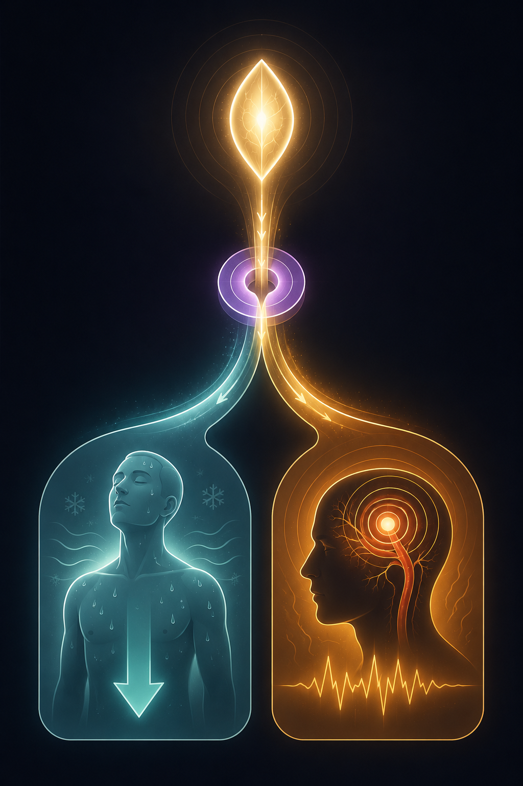
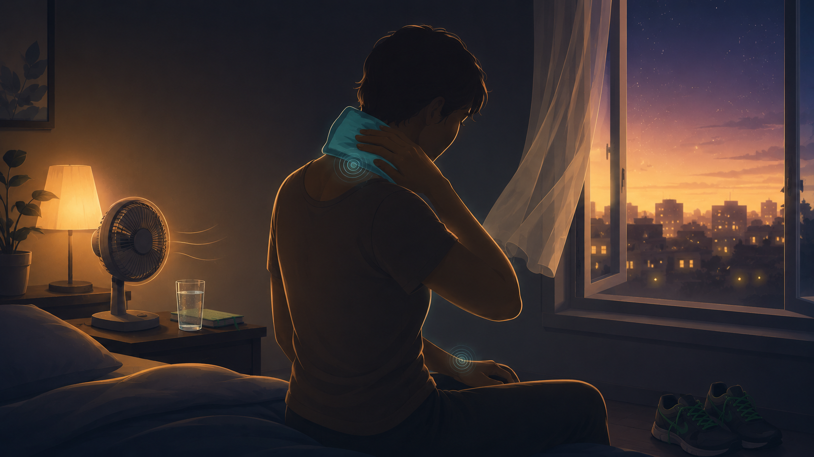

By Rustam Iuldashov
30 years lived experience with chronic migraine | Sources: 22 peer-reviewed references including Cell, Brain, The Journal of Headache and Pain, Headache (n=407,792 cohort), Brain Sciences (n=5,794 cohort), and European Journal of Neurology (hydration RCT) | Last updated: July 6, 2026
Medical Review: This content is based on peer-reviewed research from Cell, Neuron, Brain, The Journal of Headache and Pain, Frontiers in Neurology, Frontiers in Molecular Neuroscience, Cells, Neurobiology of Disease, Headache, Brain Sciences, Brain and Behavior, Current Pain and Headache Reports, the European Journal of Neurology, Family Practice, and Clinical Infectious Diseases.
Important Notice: This article is for informational purposes only and does not replace professional medical advice. The author is not a licensed physician or healthcare professional. Heat-related illness can be life-threatening — always consult your doctor about your own symptoms, triggers, and treatment, and never delay emergency care for suspected heatstroke.
Key Takeaways
- Your thermostat and your migraine generator share a brain region. The hypothalamus regulates body heat and helps launch migraine attacks, and both functions lean on the same neuropeptide, PACAP[4, 6, 7]
- Heat activates the very nerves that carry migraine pain. TRPV1 heat sensors on the trigeminal nerve release CGRP and PACAP, driving the vessel-widening and inflammation of an attack[9, 10, 11]
- The population data are mixed; the individual data are clear. Heat sensitivity is real in a subgroup — if you feel heat-triggered, trust that over the averaged studies[16]
- Dehydration compounds everything. Even mild dehydration lowers your threshold; an extra ~1.5L of water daily, with electrolytes in heat, has trial support[12, 20, 21]
- Cool strategically, not totally. Target pulse points and the back of the neck, protect sleep and temperature transitions — no ice cave required
- Know when it’s not a migraine. Confusion, uncontrolled body temperature, or sweating that stops in the heat signals heatstroke — an emergency, not a headache[19]
You know the feeling. The forecast says another scorcher, and before you’ve stepped outside, some quiet part of you braces — not for the discomfort, but for the attack you already sense is coming. For thirty years I’ve watched summer do this. Not every hot day. But enough of them that heat stopped being weather and became a warning.
For a long time, the standard answer was a shrug. Weather is a trigger for some people. True, and useless. What’s changed is that researchers have started tracing the why — and the trail leads to a single, overworked structure at the base of your brain.
One Brain Region, Two Impossible Jobs
Deep in your skull sits the hypothalamus, about the size of an almond. It runs dozens of quiet operations. Two of them collide in a heat wave.
The first is temperature. A cluster of neurons at the front — the preoptic area — is your body’s thermostat. It reads the heat in your skin and your blood, compares the two, and calls for cooling: sweat, flushed cheeks, blood vessels near the surface flung open to shed warmth.[1, 2] When it works, you never notice it. When it’s swamped, everything downstream begins to wobble.
The second job is stranger. Brain scans show the hypothalamus lighting up in the hours before a migraine starts — during the premonitory phase, when the yawning and thirst and mood shift and stiff neck arrive like the first pressure drop before a storm.[3, 4] Headache researchers increasingly see the hypothalamus not as a bystander to migraine, but as one of its opening acts.[4, 5]
Now the part that should raise the hair on your arms. The warm-sensitive neurons that run your cooling response are defined, at the molecular level, by a neuropeptide called PACAP.[6] And PACAP is one of the most dependable migraine triggers science has ever found: infuse it into a person with migraine, and you can summon an attack almost to schedule.[7, 8] The heat circuit and the migraine circuit aren’t neighbors. They run on the same wire.
The shared molecule: The preoptic neurons that physically run your body’s cooling response co-express PACAP[6] — the same neuropeptide that, infused into a person with migraine, reliably provokes an attack.[7, 8] Heat management and migraine generation don’t just sit near each other in the hypothalamus. They lean on the same signaling. Ask both to run flat-out at once, and something gives.

What Actually Happens at 35°C
Follow the chain from the thermometer to the throb.
As the air heats up, temperature sensors on your nerves begin to fire — the TRPV family, TRPV1 above all.[9, 10] TRPV1 is the same channel that answers a chili pepper: a combined heat-and-pain detector, and it’s packed densely into the trigeminal nerve, the exact nerve that carries migraine pain.[10, 11] When TRPV1 opens, it spills a cocktail of neuropeptides from those nerve endings — CGRP, substance P, and PACAP among them.[9, 11]
Those molecules do precisely what a migraine requires. They swell the blood vessels around the brain’s lining. They inflame the tissue nearby. They wind the pain nerves tighter.[7, 9] In animals, PACAP alone reproduces the vessel-widening and light-sensitivity of an attack — and animals bred without PACAP are spared it.[8]
Then heat lands two more blows. Dehydration arrives fast: you sweat, blood volume falls, and a dehydrated brain is a jumpier, more pain-prone brain.[12, 13] And warmth pushes the brain’s own immune cells, the microglia, toward inflammation — lowering the firing threshold of the whole trigeminal system, the same drift that turns occasional migraine into chronic migraine.[14, 15]
So the thermostat isn’t merely failing to cool you. The machinery it uses to sense and fight heat is stitched into the machinery that builds the attack. Run both flat-out at once, and something has to give.
What the Numbers Actually Say — Honestly
Here I have to slow down, because the internet is loud with claims that outrun their evidence.
At the population level, the data are genuinely mixed. A 2025 scoping review found temperature’s link to migraine inconsistent across large studies — yet every study that examined people individually found a relationship.[16] The signal is real. It just lives in a subgroup, and averaging everyone together drowns it out. If you feel heat-triggered, you are almost certainly not imagining it. You may simply be one of the sensitive people the big studies dilute.
Where the effect surfaces, it’s modest but steady:
— +6% headache days per 10°F. Research presented at the 2024 American Headache Society meeting linked every ~5.5°C rise in outdoor temperature to a 6% jump in headache days, across diaries from 660 patients.[17]
— 407,792 adults, 12 years. A UK cohort published in Headache in 2025 found more new migraine cases among people exposed to greater temperature extremes and air pollution.[18]
— 5,794 heatstroke survivors. A 2025 German cohort carried a measurably higher risk of chronic headache in the years that followed.[19]
None of this proves heat causes your migraines. It proves heat is a real, repeatable stressor for a real slice of people — and that the harder the heat, the higher the risk climbs.[17, 19]
⚠️ When It’s Not a Migraine — Know the Emergency Line
A migraine is miserable, not life-threatening. Heat exhaustion sliding into heatstroke is. On a hot day, these signs mean you stop everything and seek emergency care now — this is not a headache to wait out:
— Confusion, disorientation, or slurred speech
— A body temperature that won’t come down
— Skin gone hot and dry, or sweating that simply stops
— A hammering heart, or fainting
Learn the difference before summer, not in the middle of it. When in doubt in extreme heat, treat it as an emergency.[19]
A Heat-Survival Protocol That Fits Real Life
You don’t need to live in a refrigerator. You need to keep the thermostat from redlining. Here’s what the biology actually supports.

Beat Dehydration to the Punch — With Electrolytes
In a pilot trial, an extra 1.5 liters of water a day cut headache hours and intensity.[20, 21] In heat, plain water isn’t enough; you’re bleeding salt through your skin, so add electrolytes. And don’t wait for thirst — thirst means you’re already behind.[12, 13]
Cool the Right Spots, Not the Whole House
You don’t have to chill every room to 18°C. Cool the blood near the surface instead: a cold pack or damp cloth on the back of the neck, the wrists, the inner elbows — the places your thermostat can act on fastest. A cool shower before bed beats air conditioning running all night.
Protect the Transitions
The danger isn’t steady heat; it’s the swing. Stepping from a frigid car onto blazing pavement, or back again, is exactly the jolt your hypothalamus hates. Move between temperatures gradually, and stay out of peak sun — roughly 11am to 4pm — on high-risk days.
Guard Your Sleep
Heat wrecks sleep, and lost sleep is a powerful trigger in its own right.[22] A cooler bedroom — even just a fan and a cracked window — defends two triggers with one move.
Time Your Treatment With Your Clinician
For clearly heat-triggered attacks, some headache specialists suggest tighter vigilance with acute or preventive medication when a heat wave is forecast.[17] That’s a conversation for your neurologist, not a solo experiment — but it’s a fair one to open.
Track It
The most useful thing you can do all summer is log the temperature beside your attacks. A population study can’t tell you whether you are heat-sensitive. Your own diary can — and it turns a vague dread into a pattern you can plan around.
Heat isn’t your enemy, and neither is your hypothalamus. It’s a small structure carrying two enormous jobs with one set of tools. Help it with the temperature job — early, gently, before it’s overwhelmed — and you give it the room to keep the other one in check.
The heat circuit and the migraine circuit aren’t neighbors. They run on the same wire — so help the one you can control.
⚕️ Important Medical Disclaimer
This article is for informational and educational purposes only and does not constitute medical advice, diagnosis, or treatment. The author, Rustam Iuldashov, is not a licensed physician, neurologist, or healthcare professional. He is a patient advocate with 30 years of personal experience living with chronic migraine.
All clinical claims in this article are sourced from peer-reviewed research published in indexed medical journals. Study designs and sample sizes are noted where applicable. The mechanisms described here — the PACAP–thermoregulation overlap, TRPV1 signaling, glial neuroinflammation — reflect converging preclinical and clinical research, much of it from animal models and reviews; they explain why heat may act as a trigger, but they do not prove heat causes migraine in any individual.
Hydration and cooling strategies are broadly safe, but do not change or self-prescribe migraine medication, and do not delay emergency care for suspected heatstroke. If you are pregnant, have a heart or kidney condition, or take medications affecting fluid balance, ask your clinician before significantly increasing water or electrolyte intake.
Heatstroke is a medical emergency. If a hot day brings confusion, an uncontrolled body temperature, hot dry skin or stopped sweating, a racing heart, or fainting, seek emergency care immediately rather than treating it as a headache. This content was last reviewed for accuracy on July 6, 2026.
References
- Boulant JA. “Role of the Preoptic-Anterior Hypothalamus in Thermoregulation and Fever.” Clinical Infectious Diseases, 31(Suppl 5):S157–S161 (2000). doi:10.1086/317521. Study design: Narrative review.
- Tan CL, Knight ZA. “Regulation of Body Temperature by the Nervous System.” Neuron, 98(1):31–48 (2018). doi:10.1016/j.neuron.2018.02.022. Study design: Review.
- Maniyar FH, Sprenger T, Monteith T, Schankin C, Goadsby PJ. “Brain activations in the premonitory phase of nitroglycerin-triggered migraine attacks.” Brain, 137(1):232–241 (2014). doi:10.1093/brain/awt320. Study design: Functional neuroimaging. n=8.
- Karsan N, Goadsby PJ. “The premonitory phase of migraine is due to hypothalamic dysfunction: revisiting the evidence.” The Journal of Headache and Pain, 23:75 (2022). doi:10.1186/s10194-022-01444-6. Study design: Critical review.
- Schulte LH, May A. “The migraine generator revisited: continuous scanning of the migraine cycle over 30 days and three spontaneous attacks.” Brain, 139(7):1987–1993 (2016). doi:10.1093/brain/aww097. Study design: Longitudinal functional neuroimaging. n=1 (serial scanning).
- Tan CL, Cooke EK, Leib DE, et al. “Warm-Sensitive Neurons that Control Body Temperature.” Cell, 167(1):47–59.e15 (2016). doi:10.1016/j.cell.2016.08.028. Study design: Preclinical (mouse) mechanistic study.
- Togha M, Ghorbani Z, Ramazi S, Zavvari F, Karimzadeh F. “Evaluation of Serum Levels of TRPV1, VIP, and PACAP in Chronic and Episodic Migraine: The Possible Role in Migraine Transformation.” Frontiers in Neurology, 12:770980 (2021). doi:10.3389/fneur.2021.770980. Study design: Case-control. n=89.
- Markovics A, Kormos V, Gaszner B, et al. “Pituitary adenylate cyclase-activating polypeptide plays a key role in nitroglycerol-induced trigeminovascular activation in mice.” Neurobiology of Disease, 45(1):633–644 (2012). doi:10.1016/j.nbd.2011.10.010. Study design: Preclinical (PACAP-knockout mouse).
- Iyengar S, Johnson KW, Ossipov MH, Aurora SK. “CGRP and PACAP in Migraine.” Frontiers in Molecular Neuroscience, 17:1355281 (2024). doi:10.3389/fnmol.2024.1355281. Study design: Bench-to-bedside review.
- Dux M, Sántha P, Jancsó G. “Capsaicin-sensitive neural elements and TRPV1 in trigeminal nociception.” Frontiers in Cellular Neuroscience, 9:287 (2015). doi:10.3389/fncel.2015.00287. Study design: Preclinical review.
- Benemei S, Dussor G. “TRP Channels and Migraine: Recent Developments and New Therapeutic Opportunities.” Cells, 8(11):1387 (2019). doi:10.3390/cells8111387. Study design: Review.
- Blau JN. “Water deprivation: a new migraine precipitant.” Headache, 45(6):757–759 (2005). doi:10.1111/j.1526-4610.2005.05143_3.x. Study design: Observational.
- Arca KN, Halker Singh RB. “Dehydration and Headache.” Current Pain and Headache Reports, 25:56 (2021). doi:10.1007/s11916-021-00966-z. Study design: Review.
- Lu W, Zhang Y, Shi C, et al. “Targeting glial-orchestrated neuroinflammation in migraine pathophysiology.” The Journal of Headache and Pain, 27:52 (2026). doi:10.1186/s10194-026-02272-8. Study design: Mechanistic review.
- Jing F, Zou Q, Wang Y, Cai Z, Tang Y. “Activation of microglial GLP-1R in the trigeminal nucleus caudalis suppresses central sensitization of chronic migraine after recurrent nitroglycerin stimulation.” The Journal of Headache and Pain, 22:86 (2021). doi:10.1186/s10194-021-01302-x. Study design: Preclinical (mouse).
- Kelbert J, Tobin JA. “The Effect of Ambient Temperature on Migraine Disease: A Scoping Review.” Brain and Behavior, 15(8):e70708 (2025). doi:10.1002/brb3.70708. Study design: Scoping review (12 studies).
- Martin VT, et al. “Ambient temperature and headache occurrence.” Presented at the American Headache Society 66th Annual Scientific Meeting (2024). Study design: Prospective diary study. n=660.
- Ye S, Gao Y, Lin Y, Wang J, Wu IX, Xiao F. “Ambient nitrogen dioxide, temperature exposure, and migraine incidence: a large prospective cohort study.” Headache: The Journal of Head and Face Pain, 65(8):1318–1330 (2025). doi:10.1111/head.15037. Study design: Prospective cohort (UK Biobank). n=407,792.
- Kostev K, Rodemer I, Konrad M, Bohlken J. “Heatstroke Is Associated with an Increased Risk of Chronic Headache: A Retrospective Cohort Study.” Brain Sciences, 15(9):1011 (2025). doi:10.3390/brainsci15091011. Study design: Retrospective cohort. n=5,794 + 28,970 controls.
- Spigt MG, Kuijper EC, van Schayck CP, et al. “Increasing the daily water intake for the prophylactic treatment of headache: a pilot trial.” European Journal of Neurology, 12(9):715–718 (2005). doi:10.1111/j.1468-1331.2005.01081.x. Study design: Randomized pilot trial.
- Spigt M, Weerkamp N, Troost J, van Schayck CP, Knottnerus JA. “A randomized trial on the effects of regular water intake in patients with recurrent headaches.” Family Practice, 29(4):370–375 (2012). doi:10.1093/fampra/cmr112. Study design: RCT. n=102.
- Bertisch SM, et al. “Whether Weather Matters with Migraine.” Current Pain and Headache Reports, 28(4):181–187 (2024). doi:10.1007/s11916-024-01216-8. Study design: Review.

How We Create Content
- Peer-reviewed sources only. Cell, Neuron, Brain, The Journal of Headache and Pain, Frontiers in Neurology, Frontiers in Molecular Neuroscience, Frontiers in Cellular Neuroscience, Cells, Neurobiology of Disease, Headache, Brain Sciences, Brain and Behavior, Current Pain and Headache Reports, the European Journal of Neurology, Family Practice, and Clinical Infectious Diseases.
- Study transparency. Study design and sample sizes noted for every clinical reference.
- Honest uncertainty. Where the evidence is mixed or preliminary — as with heat as a population-level trigger — that is stated plainly, not smoothed over.
- Source verification. All claims backed by numbered references with DOI links.
- Experience + science. 30 years personal migraine experience combined with peer-reviewed evidence.
- No conflicts of interest. No funding from pharmaceutical companies, supplement or electrolyte brands, or device manufacturers.
Heat Is One Trigger. Tracking Reveals Yours.
A population study can’t tell you whether you’re heat-sensitive — but your own diary can. Log your attacks against temperature, sleep, hydration, and weather, and watch the pattern emerge over a single summer. Migraine Companion was built for exactly that work.
Last reviewed: July 6, 2026
Next scheduled review: January 6, 2027